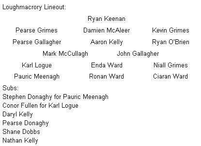

Saturday 14 June 2014
TRILLICK 1 -
Dramatic late equaliser from Ward
Ronan Ward guided a 50 metre free over the bar in injury time in Trillick this evening to earn a draw and claim a much needed league point for Loughmacrory. It was not the only dramatic score of the evening as the Lough came from five down with five minutes to play as a John Gallagher goal in the final minute of normal time reduced the deficit to a point and paved the way for Ward’s equaliser.
The visitors started the game brightly and had three points on the board courtesy of Ronan Ward (2) and Pauric Meenagh to lead three nil after three minutes. Trillick made a dangerous attack and could have drawn level but for some good defending allied to some good fortune. They did make it 0 – 2 to 0 – 3 before Enda Ward took a pass from Pauric Meenagh to split the posts and Meenagh notched his second score of the evening from a free after John Gallagher was fouled. It was nip and tuck at this stage and Meenagh put Enda Ward through for his second point to put his side a point up five minutes from the break. The home team then hit three points to go two ahead but Loughmacrory had the last say of the half when Pauraic Meenagh made no mistake from a close in free after Aaron Kelly was upended as he bore down on goal leaving the half time score Loughmacrory 0 – 07 Trillick 0 – 08.
ACL Division 2